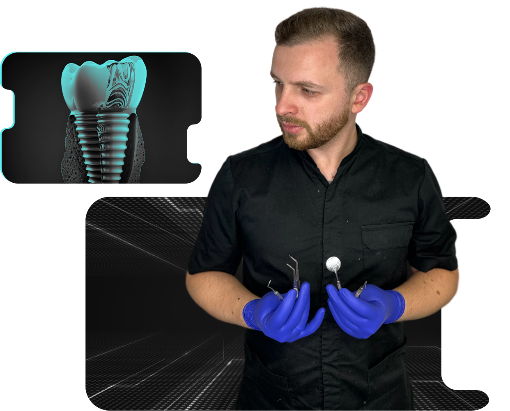

Що таке коронки і навіщо вони потрібні? Протезування — це розділ стоматології,
який розробляє та реалізує штучні заміни зубів і ясен. Сюди входять пломби, зубні протези, вініри,
коронки, мости, зубні імпланти та будь-яка комбінація лікування для відновлення втрачених або
пошкоджених зубів. Заміна відсутніх або пошкоджених зубів важлива з багатьох причин.
Прогалини у вашій посмішці не тільки бентежать вас, але й піддають ризику виникнення
стоматологічних проблем, таких як проблеми з вирівнюванням зубів, втрата кісткової тканини,
проблеми з їжею та навіть з мовою.
Розуміння ваших можливостей протезування може допомогти вам вирішити, які методи лікування можуть
повернути вам оптимальне здоров’я порожнини рота та впевнено посміхатися.

Коронки — це спеціальні ковпачки, якими покривають зуб, щоб відновити його анатомію, у випадках,
коли відновити пломбою або вкладкою вже немає можливості. Виготовляються майже ідентичні до
кольору та природної форми зуба.
Індивідуальні протези виготовляються лише після того, як ваш стоматолог знімає відбиток зуба або
зубів, які покриватимуть коронки.
Вони, як правило, є хорошим довгостроковим рішенням для зубів, які були з певними відколами,
тріщинами або зношеними.
Раніше коронки виготовлялися з металу, але зараз колір коронки не повинен відрізнятися за
кольором від власного зуба. Для цього метал покривається керамікою (металокерамічна коронка) або
коронки виготовляються зовсім без металу (керамічні або цирконієві коронки).
Найчастіше використовуються керамічні, тому що стоматологи можуть без зайвих проблем поєднати їх
з природним кольором зубів.
Переваги безметаллових коронок полягає в тому, що для їх виготовлення потрібно менше обточування
зуба, вони міцніше, краще прилягають до тканин зуба, тому довше служать і внаслідок відсутності
металу виглядають естетично.
Коронки відновлюють вашу посмішку, і стоматологи насправді
рекомендують їх у багатьох випадках, які не пов’язані з повною втратою зубів.
Ось кілька прикладів сценаріїв, коли коронки
є кращим вибором, ніж зубні протези:
Коли руйнування зуба занадто запущене (понад 50% ураження) і не може бути відновлено іншим
способом.
Реставрація зламаного або сильно зношеного зуба.
У випадку, якщо зуб був оброблений кореневим каналом, у результаті чого зуб стане слабкіше і є
ризик відколу: коронка захистить ослаблений зуб і виправить його зміну кольору.
Після імплантації.
Якщо зуб змінений в кольорі, порушена форма або структура.
Для досягнення естетичного ефекту.
Якщо коронка встановлюється на зуб, в якому давно видалений нерв, то потрібно бути впевненим, що
коріння міцні, не вражені карієсом, і відсутній періодонтит. Для цього необхідно зробити
рентген-знімок, а краще комп’ютерну томографію, яка допоможе дізнатись його справжній стан.
Для отримання коронки часто потрібно дві зустрічі у кабінеті стоматолога. Приклад типового
процесу виготовлення та встановлення зубної коронки:
Під час першого відвідування стоматолог детально обговоримо всі можливі варіанти лікування. Після
цього треба переконатися, що зуб, який стабільний, це означає, що будь-яке руйнування або карієс
ретельно очищається та відновлюється.
Якщо зуб був оброблений кореневим каналом, вам можуть рекомендувати спочатку нарощування ядра за
допомогою штифта для кореневого каналу, який зміцнить ядро зуба.
Всі процедури відбуватимуться під місцевою анестезією, тому не потрібно турбуватися про біль.
Далі стоматолог отримує м’яку форму ваших зубів, тобто робить їх зліпок. Заповнює будь-які
порожнини в пошкодженому зубі (при необхідності) та підготовляє зуб до отримання коронки.
Встановлює тимчасову коронку на зуб, а постійну коронку виготовляють в лабораторії відповідно до
вашого індивідуального зліпку. У цей час може виникнути чутливість до тепла і холоду, це цілком
нормально. Також бажано уникати жування гумки та вживання дуже твердої або липкої їжі, адже вона
може пошкодити тимчасові заходи.
Всі процедури відбуватимуться під місцевою анестезією, тому не потрібно турбуватися про біль.
Далі стоматолог отримує м’яку форму ваших зубів, тобто робить їх зліпок. Заповнює будь-які
порожнини в пошкодженому зубі (при необхідності) та підготовляє зуб до отримання коронки.
Встановлює тимчасову коронку на зуб, а постійну коронку виготовляють в лабораторії відповідно до
вашого індивідуального зліпку. У цей час може виникнути чутливість до тепла і холоду, це цілком
нормально. Також бажано уникати жування гумки та вживання дуже твердої або липкої їжі, адже вона
може пошкодити тимчасові заходи.
На другому прийомі, стоматолог встановлює постійну коронку. Іноді потрібні невеликі коригування
міжзубних або прикусних контактів, підсилення зуба. Коли все підходить ідеально і пацієнт
задоволений результатом, коронку фіксують назавжди.
Коронки вважаються відносно постійним рішенням. Після встановлення, термін який вона прослужить
від 5 до 15 років. Однак, якщо пацієнт буде дотримуватись усіх рекомендацій лікаря та дбати про
стан своєї посмішки, термін дії може бути значно довшим. Ви повинні чистити зуб з коронкою, як і
будь-який інший.
Коронка з часом може тріснути чи відколотися, або ж так званий цемент, який утримує її на місці, може
розм’якшитися. Це дозволити бактеріям проникнути всередину і інфікувати зуб.
Вартість металокерамічної коронки — 3000 грн, Безметалевої — від 5000 до 7000 грн. Якщо ж коронка
ставитися не на свій зуб, а на імплант, то до ціни коронки додається вартість комплектуючих до
обраного імпланту.
Догляд за зубними коронками
Як і натуральні зуби, коронки потребують очищення та догляду. Якщо гігієна зубів не достатня, під
нею все ще може утворюватись карієс, а ясна стають більш чутливі.
Щоб запобігти карієсу або пошкодженню коронки:
Чистіть зуби принаймні двічі на день (вранці та ввечері) і щодня прочищайте міжзубні проміжки
за допомогою зубної нитки та/або водяної пілки.
Використовуйте засоби для догляду за порожниною рота. Не забудьте порадитись із вашим
стоматологом, щоб впевнитись, що вони відповідають усім стандартам безпеки та ефективності для
вашого конкретного випадку.
Як і у випадку з природними зубами, бажано уникати надзвичайно твердої їжі, жування льоду або
інших твердих предметів, таких як олівці або ядра фруктів.
І не забувайте про регулярне відвідування стоматолога з метою огляду та чистки зубів.
Щоб дізнатися докладніше, який вид лікування підійде вам — запишіться на безкоштовну консультацію
за телефоном +380500230145
На фото представлено відновлення зруйнованих зубів за допомогою цирконієвих коронок.